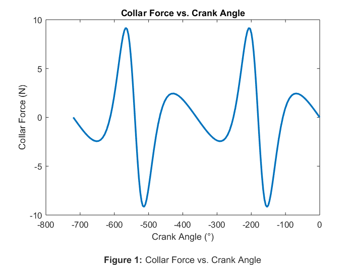
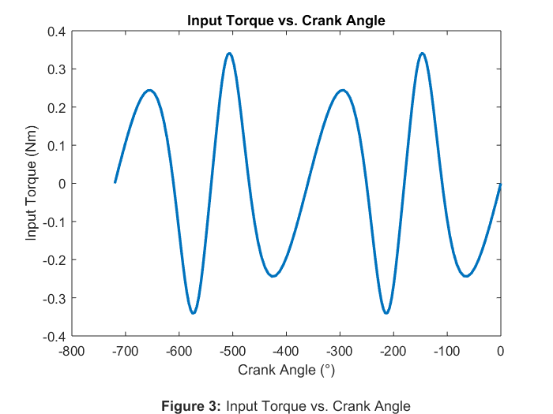
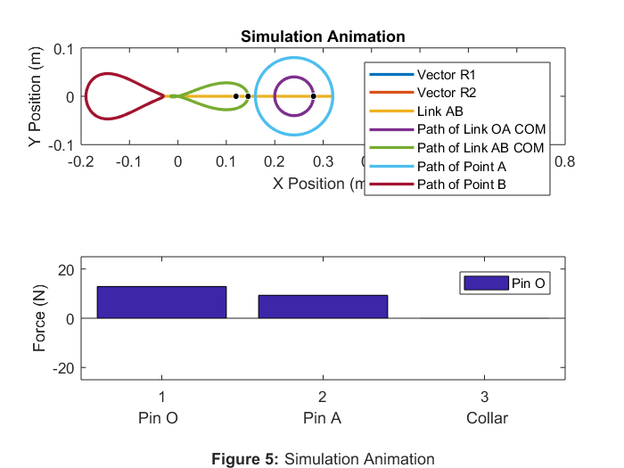

Rahul_Goyal_main Usage and Description
ME 326 Winter 2018 - Laboratory Assignment #5b
Author: RAHUL GOYAL
California Polytechnic State University, San Luis Obispo, CA
Date Created: February 27, 2018
Date Modified: March 06, 2018
Description: This script simulates the motion of a slider-crank. Afterwards, it compares the collar force, the magnitude of each pin force, and the input torque to the angular position of link OA and the input power to time. Additionally, it animates the slider-crank by using the simulation data.
Required Files:
- Simulator.slx - This file uses Simulink to double integrate part of a MATLAB Function Block which describes the accelerations and forces of the simulation (only the accelerations are integrated). It outputs the positions as xout, the velocities as vout, the accelerations as aout, the forces as Fout, and the times as tout with inputs of the MATLAB function, initial conditions, and final condition.
- link_solver.m - This file contains a function that represents the accelerations and forces of the simulation. It returns x with an input of u.
Called Functions
- clear all;
clc;
Set Values
The following is used to easily change the initial and final angular positions of link OA.
t2_0 = deg2rad(0); % Angular position initial of link OA (rad) theta2_stop = t2_0-4*pi; % Angular psoition final of link OA (rad)
Given Values
The following assigns values given by the problem statement to variables.
tdot_2 = -3; % Angular velocity of link OA (rad/s) l_ab = 350/1000; % Length of link AB (m) r_1 = 240/1000; % Length of vector R1 (m) r_2 = 80/1000; % Length of vector R2 (m)
Initial Conditions
The following sets the initial conditions of the slider-crank. See the attached file for hand calculations.
% Position Initial Conditions % Length initial of vector R2 (m) [Pythagorean Theorem] r3_0 = hypot(r_1+r_2*cos(t2_0), r_2*sin(t2_0)); % Angular position initial of link OA (rad) [Law of Sines] t3_0 = asin(sin(pi-t2_0)/r3_0 * r_2); % COM[x] initial of link OA (m) x2_0 = r_1 + r_2/2*cos(t2_0); % COM[y] initial of link OA (m) y2_0 = r_2/2*sin(t2_0); % COM[x] initial of link AB (m) x3_0 = r_1 + r_2*cos(t2_0) - l_ab/2*cos(t3_0); % COM[y] initial of link AB (m) y3_0 = r_2*sin(t2_0) - l_ab/2*sin(t3_0); % Position Initial Conditions Matrix x_0 = [r3_0, t3_0, x2_0, y2_0, x3_0, y3_0]; % Velocity Initial Conditions A = [cos(t3_0), -r3_0*sin(t3_0); sin(t3_0), r3_0*cos(t3_0)]; b = [-r_2*tdot_2*sin(t2_0); r_2*tdot_2*cos(t2_0)]; x = A \ b; % Velocity initial of vector R3 (m/s) rdot3_0 = x(1); % Angular velocity initial of link AB (rad/s) tdot3_0 = x(2); % Velocity_G[x] initial of link OA (m/s) xdot2_0 = -tdot_2 * r_2/2*sin(t2_0); % Velocity_G[y] initial of link OA (m/s) ydot2_0 = tdot_2 * r_2/2*cos(t2_0); % Velocity_G[x] initial of link AB (m/s) xdot3_0 = -tdot_2*r_2*sin(t2_0) + tdot3_0*l_ab/2*sin(t3_0); % Velocity_G[x] initial of link AB (m/s) ydot3_0 = tdot_2*r_2*cos(t2_0) - tdot3_0*l_ab/2*cos(t3_0); % Velocity Initial Conditions Matrix v_0 = [rdot3_0, tdot3_0, xdot2_0, ydot2_0, xdot3_0, ydot3_0];
Simulate the Slider-Crank Using Simulink
The following calls the Simulink file Simulator.slx, which outputs the positions as xout, the velocities as vout, the accelerations as aout, the forces as Fout, and the times as tout with with link_solver.m as the input for the MATLAB Fuction, tdot_2, t2_0, v_0, and x_0 as the inputs for the initial conditions, and theta2_stop as the input for the final conditions.
sim('Simulator.slx');
Plotting Data Setup
The following sets up easy access to data for plotting.
t_2s = t2_0 + tdot_2*tout; % Angular positions of link OA (rad) FO_x = Fout(:, 1); % Force[x] in pin O (N) FO_y = Fout(:, 2); % Force[y] in pin O (N) FA_x = Fout(:, 3); % Force[x] in pin A (N) FA_y = Fout(:, 4); % Force[y] in pin A (N) F_C = Fout(:, 5); % Force in pin C (N) T = Fout(:, 6); % Input torque (Nm)
Collar Force vs. Crank Angle
The following plots the collar force as a function of crank angle.
By visual observation, the graph has periodic relative maximums at about -75° and -225°, periodic relative minimums at about -150° and -300°, and periodic zeroes at about 0°, -100°, -175°, and -250°. Converting these angles to positive values, the graph has periodic relative maximums at about 285° and 135°, periodic relative minimums at about 210° and 60°, and periodic zeroes at about 0°, 260°, 185°, and 110°.
The maximums and minimums signify maximum and minimum peaks, respectively, in the collar force; the zeroes signify zeroes in the magnitude of the collar force. Watching an animation of the slider-crank, the collar force peaks seem to occur when the velocity of link AB with respect to the collar is changing most noticeably and the collar force zeroes seem to occur when the velocity of link AB with respect to the collar flips directions. This behavior is as expected because acceleration is the derivative of velocity, and net force is directly and linearly related to acceleration. The collar exerts a force on link AB, and so it is reasonable that this force behaves similarly to the expected net force on link AB. However, because the collar force and the net force are not the same, analysis of the collar force reveals some smaller relative peaks as well. These are likely a result of the fact that the center of mass of link AB crosses the collar.
plot(rad2deg(t_2s), F_C, 'LineWidth', 2); title('Collar Force vs. Crank Angle'); xlabel({'Crank Angle (°)' '' % Figure label '\bfFigure 1: \rmCollar Force vs. Crank Angle'}); ylabel('Collar Force (N)');
Magnitude of Each Pin Force vs. Crank Angle
The following plots the magnitude of each pin force as a function of crank angle.
The graphs of the magnitudes of each pin force resemble each other. By visual observation, both graphs have periodic relative maximums at about 0° and -175° and periodic relative minimums at about -100° and -250°. Converting these angles to positive values, the graphs have a periodic relative maximum at about 0° and 185° and periodic relative minimums at about 260° and 110°.
The maximums and minimums signify peaks in the magnitude of the force in pin O and pin A. Unlike the collar force, neither pin force is ever zero. Watching an animatmion of the slider-crank, the magnitude of the forces increase as the magnitude of the angular velocity of link AB increases, and vice versa. This behavior is as expected because angular acceleration is the derivative of angular velocity, and net torque is directly and linearly related to angular acceleration. Both pins exert a moment on link AB (whether directly or indirectly), and so it is reasonable that this moment behaves similarly as the expected net torque on link AB.
F_O = hypot(FO_x, FO_y); % Magnitude of force of pin O (N) F_A = hypot(FA_x, FA_y); % Magnitude of force of pin A (N) % Plot plot(rad2deg(t_2s), F_O, rad2deg(t_2s), F_A, 'LineWidth', 2); title('Magnitude of Each Pin Force vs. Crank Angle'); xlabel({'Crank Angle (°)' '' % Figure label '\bfFigure 2: \rmMagnitude of Each Pin Force vs. Crank Angle'}); ylabel('Pin Force (N)'); legend('|Fo|', '|Fa|');
Input Torque vs. Crank Angle
The following plots the input torque as a function of crank angle.
By visual observation, the graph has a periodic relative maximums at about -150° and -300°, periodic relative minimums at about -75° and -225°, and periodic zeroes at about 0°, -100°, -175°, and -250°. Converting these angles to positive values, the graph has periodic relative maximums at about 210° and 60°, periodic relative minimums at about 285° and 135°, and periodic zeroes at about 0°, 260°, 185°, and 110°.
The maximums and minimums signify maximum and minimum peaks, respectively, in the input torque. Comparing the maximums and minimums of the input torque to the maximums and minimums of the collar force, it's seen that the input torque increases as the collar force decreases, and vice versa.
Interestingly, the input torque behaves almost like a negative derivative of the magnitude of each pin force, but this is likely just a coincidence.
plot(rad2deg(t_2s), T, 'LineWidth', 2); title('Input Torque vs. Crank Angle'); xlabel({'Crank Angle (°)' '' % Figure label '\bfFigure 3: \rmInput Torque vs. Crank Angle'}); ylabel('Input Torque (Nm)');
Input Power vs. Time
The following plots the input power as a function of time.
The input power can be defined by the input torque times the angular velocity. The area under the curve represents energy because energy is equivalent to the integral of power with respect to time.
The graph of the input power resembles the graph of the input torque, however this is only because the angular velocity of link OA is constant. By visual observation, the areas under the curve sum to zero. Therefore, energy is conserved over a cycle.
P = T*tdot_2; % Input power (W) % Plot area(tout, P); title('Input Power vs. Time'); xlabel({'Time (s)' '' % Figure label '\bfFigure 4: \rmInput Power vs. Time'}); ylabel('Input Power (W)');
Simulation Animation
The following animates the slider-crank by using the simulation data.
% Cartesian Coordinates of Vector R1 r1_x = [0, r_1]; r1_y = [0, 0]; % Cartesian Coordinates of the COM of Vector R1 x_1 = (r1_x(end)-r1_y(1))/2; y_1 = (r1_y(end)-r1_y(1))/2; % Easy access to... r_3 = xout(:, 1); % Lengths of vector R3 (m) t_3 = xout(:, 2); % Angular positions of link AB (rad) x_2 = xout(:, 3); % COMs[x] of link OA (m) y_2 = xout(:, 4); % COMs[y] of link OA (m) x_3 = xout(:, 5); % COMs[x] of link AB (m) y_3 = xout(:, 6); % COMs[y] of link AB (m) % Cartesian Coordinates of Point A a_x = r1_x(end)+r_2*cos(t2_0+tdot_2*tout); a_y = r1_y(end)+r_2*sin(t2_0+tdot_2*tout); % Cartesian Coordinates of Point B b_x = a_x - l_ab*cos(t_3); b_y = a_y - l_ab*sin(t_3); for t = 1:length(tout) t_2 = t2_0 + tdot_2*tout(t); % Angular position of link OA (m) % Cartesian Coordinates of Vector R2 r2_x = [r1_x(end), r1_x(end) + r_2*cos(t_2)]; r2_y = [r1_y(end), r1_y(end) + r_2*sin(t_2)]; % Cartesian Coordinates of Link AB lab_x = [r2_x(end), r2_x(end) - l_ab*cos(t_3(t))]; lab_y = [r2_y(end), r2_y(end) - l_ab*sin(t_3(t))]; % Plot the links, COMs, COM paths subplot(2, 1, 1); plot(r1_x, r1_y, ... % Vector R1 r2_x, r2_y, ... % Vector R2 lab_x, lab_y, ... % Link AB x_2(1:t), y_2(1:t), ... % Path of link OA COM x_3(1:t), y_3(1:t), ... % Path of link AB COM a_x(1:t), a_y(1:t), ... % Path of point A b_x(1:t), b_y(1:t), ... % Path of point B 'LineWidth', 2); % Line Properties % COM of Vector R1 viscircles([x_1, y_1], 0.0025, 'Color', 'k'); % COM of Link OA viscircles([x_2(t), y_2(t)], 0.0025, 'Color', 'k'); % COM of Link AB viscircles([x_3(t), y_3(t)], 0.0025, 'Color', 'k'); % Keep the frame consistent axis equal; axis([-0.2, 0.8, -0.1, 0.1]); % Magnitude of force of pin O (N) F_O = hypot(Fout(t, 1), Fout(t, 2)); % Magnitude of force of pin A (N) F_A = hypot(Fout(t, 3), Fout(t, 4)); % Collar force (N) F_C = Fout(t, 5); % Plot the real-time forces subplot(2, 1, 2); bar([F_O, F_A, F_C]); % Keep the frame consistent ylim([-25, 25]); % Calculate the time step and pause accordingly if t ~= length(tout) % Prevent index error % Calculate the time step (s) t_step = tout(t+1) - tout(t); pause(t_step); % Assume negligible processing time end end % Plot labeling (last frame) subplot(2, 1, 1); title('Simulation Animation'); xlabel('X Position (m)'); ylabel('Y Position (m)'); legend('Vector R1', 'Vector R2', 'Link AB', ... 'Path of Link OA COM', 'Path of Link AB COM', ... 'Path of Point A', 'Path of Point B'); subplot(2, 1, 2); xlabel({'Pin O Pin A Collar' '' % Figure label '\bfFigure 5: \rmSimulation Animation'}); ylabel('Force (N)'); legend('Pin O', 'Pin C', 'Collar');